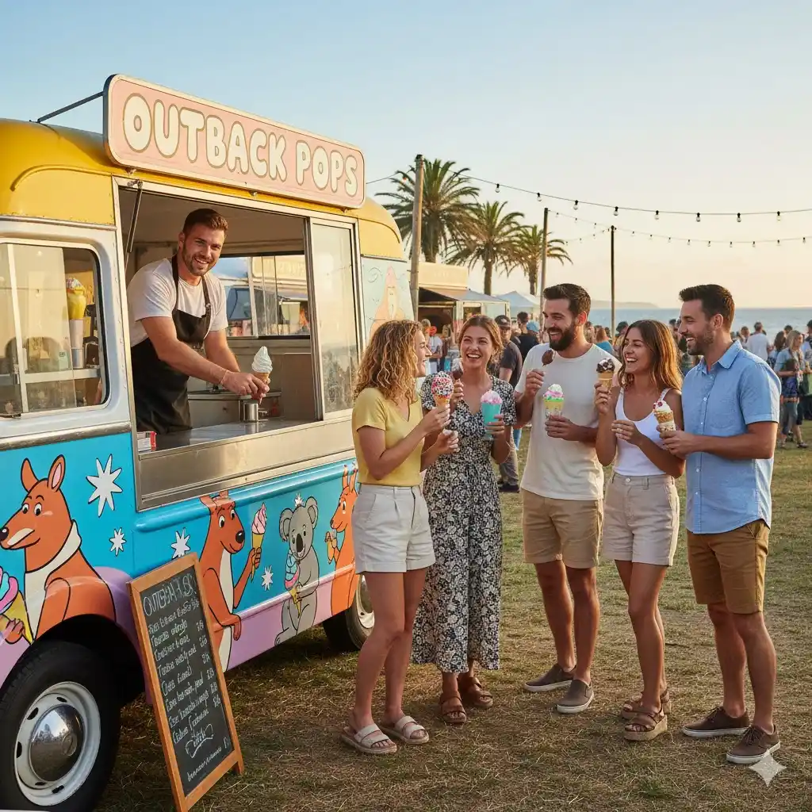
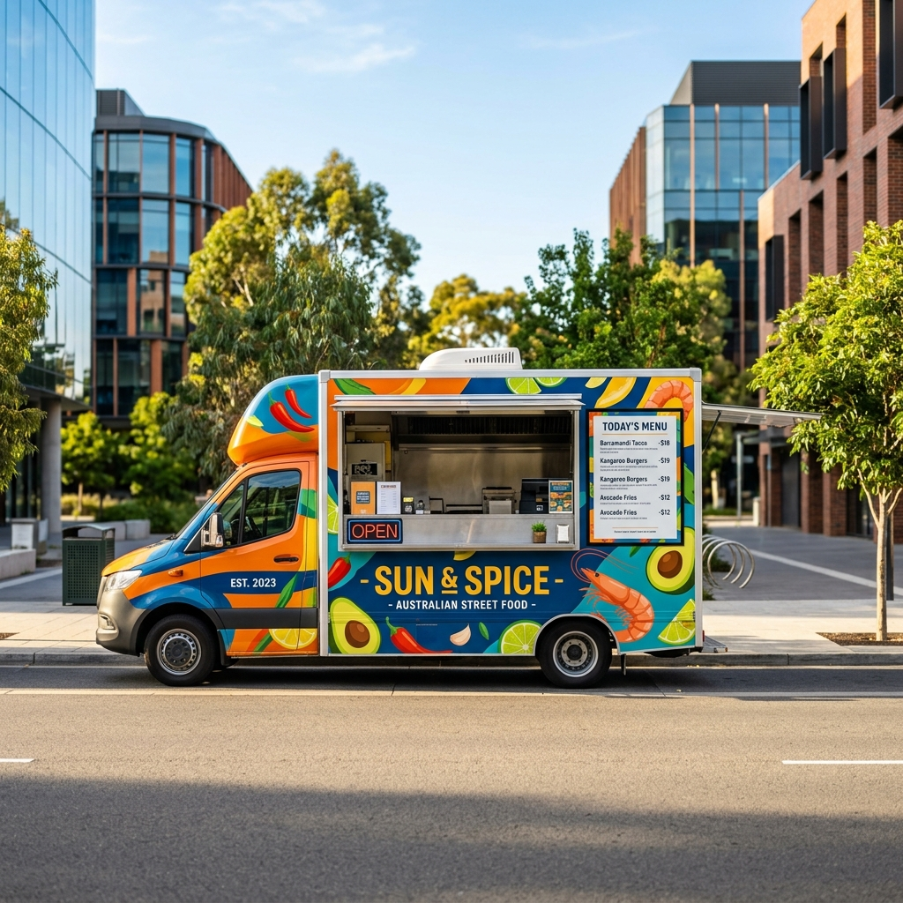

Food Truck Insurance
Protecting Your Passion on Wheels
Quick Quote
Get covered in minutes
Why Food Truck Insurance Is Important
Operating a food truck comes with unique risks that traditional insurance policies simply don’t cover. From kitchen fires and equipment breakdowns to customer injuries or food-related illness, a single incident can lead to significant financial loss.
Food truck insurance helps protect your income, your assets, and your reputation — so you can focus on running your business with confidence.

Who Needs Food Truck Insurance?
If you operate any type of mobile food business in Australia, you should have the right insurance in place. This includes:
Food truck owners
Coffee van operators
Food trailer businesses
Mobile catering services
Market and festival vendors
Even part-time or weekend operators need cover whenever they are trading or on the road.
Why Australian Food Truck Operators Choose Us
Food truck insurance in Australia isn’t one-size-fits-all — and choosing the wrong policy can leave your business exposed when it matters most.
A coffee van has very different risks compared to a deep-fryer food truck. A weekend market operator has different needs to a multi-vehicle fleet. That’s why we provide fully customised food truck insurance policies — designed to cover exactly what your business needs, without paying for unnecessary extras.
As specialist food truck insurance brokers, we understand the real-world challenges of running a mobile food business in Australia. We don’t just sell insurance — we help keep your business moving.

Here’s what sets us apart:
Council & event compliance
We ensure your policy meets Australian council and event requirements — including the standard $20 million public liability insurance required by most markets and festivals.
Built for mobile food risks
From fire and equipment damage to food contamination and theft, our policies are tailored specifically for food trucks, trailers, and coffee vans.
Fast claims when you need them
If your truck is off the road, your income stops. We prioritise fast, hassle-free claims to get you back trading as quickly as possible.
Australia-wide expertise
We understand the different rules and requirements across NSW, VIC, QLD, WA, SA, TAS, ACT and NT, so you’re always compliant wherever you operate.
Whether you’re just starting out or running a growing fleet, we make it simple to get the right cover — quickly, affordably, and with confidence.
What You're Covered For
When you take out food truck insurance in Australia, you need more than just basic vehicle cover — you need protection for your entire business on wheels. Our policies are designed to cover the real risks food truck operators face every day, whether you're on the road, at a market, or parked overnight.
Fire, Theft & Explosion
Your food truck is a significant investment, and so is everything inside it. Our cover protects your vehicle, equipment and stock against fire, theft, and accidental explosion — including high-risk cooking setups like deep fryers and gas appliances.
Collision & Accidental Damage
Whether you're driving between events or setting up at a busy location, accidents can happen. You're covered for damage caused by collisions, reversing incidents, or unexpected impacts — helping you get back on the road quickly.
Public & Product Liability ($20M)
Serving the public comes with responsibility. This cover protects you if a customer is injured near your truck or becomes ill from your food. Most councils and event organisers in Australia require at least $20 million public liability cover — and we make sure you meet that standard.
Equipment & Fit-Out Protection
From grills and fryers to coffee machines and refrigeration, your fit-out is the heart of your business. We cover both fixed and portable equipment, including custom-built interiors, signage, and essential tools of trade.
Australia-Wide Cover
Your business isn’t tied to one location — and neither is your insurance. Whether you're trading locally or travelling interstate for festivals and events, your policy moves with you, giving you complete peace of mind across Australia.
Optional Extras: Customise Your Food Truck Insurance for Complete Protection
Every food truck business is different — and your insurance should reflect that. Our optional extras allow you to tailor your policy to match your exact setup, risks, and growth plans. Whether you operate solo or run a fleet, these add-ons ensure you’re fully protected where it matters most.
High-risk equipment cover
Protects deep fryers, grills, and high-risk cooking equipment from fire, damage, and costly breakdowns.
Transit cover
Covers your food, stock, and portable equipment against loss or damage while travelling between locations.
Loss of income
Replaces lost income if your food truck can’t operate due to an insured event like fire or accident.
Workers’ compensation
Covers employee injuries, medical costs, and lost wages to keep your business compliant and protected.
Fleet cover
Simplifies insurance and reduces costs by covering multiple food trucks or vehicles under one flexible policy.
What Affects the Cost of Food Truck Insurance?
Several key factors influence how much you’ll pay for food truck insurance:
Truck Value
The higher the value of your food truck, trailer, or van, the more it costs to insure. This includes not just the vehicle itself, but also your custom fit-out and installed equipment.
Equipment Type
The type of cooking equipment you use plays a big role in pricing. Deep fryers and open flames are higher risk (higher premium), while coffee machines or cold prep are lower risk (lower premium).
Business Turnover
Higher turnover means more customers and increased exposure to risk, which can increase your public liability premium.
Operating Location
Where you trade and where you park overnight matters. Busy events and unsecured parking locations can increase costs, while secure storage can help reduce them.
Claims History
If you have a clean claims record, you’re more likely to receive lower premiums over time. Previous claims may increase your insurance cost.
How to Get the Best Price
Request a personalised quote. We compare multiple insurers to find you the right cover at the most competitive rate.
Get Fast QuoteHow to Get Food Truck Insurance in Australia
Getting food truck insurance in Australia doesn’t need to be complicated. We’ve streamlined the process so you can get covered quickly and get back to doing what you do best — serving great food.

Request a Fast Quote
Start by filling out our quick online quote form or calling our team. It takes less than 3 minutes to get started. We’ll ask a few simple questions about your food truck, trailer, or coffee van to understand your needs.
Tell Us About Your Business
Provide details about your vehicle, fit-out, cooking equipment, and where you operate (markets, events, street trading, etc.). This helps us tailor a food truck insurance policy that fits your exact business — no unnecessary extras.
Receive Your Tailored Insurance Quote
Our specialist brokers compare options from leading insurers to find you the best cover at the most competitive price. You’ll receive a customised quote that includes everything from public liability to equipment and vehicle cover.
Get Covered — Often Same Day
Once you’re happy with your quote, simply accept your policy and you can be covered the same day. We’ll issue your Certificate of Currency quickly, so you’re ready for councils, events, and festivals across Australia.
Frequently Asked Questions
Advisor's Take: The "best" insurance is the type of pack that includes Business and Vehicle.
You can't just buy 3rd Party Property as a truckie, and NOT have Public Liability for your customers. A high-end policy would look something like this:
- Commercial Motor: For Comprehensive — Replaces or repairs your truck if damaged and covers loss of the insured vehicle (theft of truck).
- Public & Products Liability: If a customer slips or becomes ill from your food, you’ll be protected.
- Business Interruption: Helps you maintain cash flow if you are unable to trade because of an insured event.
Advisor's Take: It depends, but generally somewhere between $800 and $2,500+ per year.
Think of it like build cost: a stripped-back coffee van is cheaper to insure than a big truck with deep fryers and grills. Key factors include:
- Your vehicle & gear value: Make sure you are sufficiently covered for the entire replacement cost.
- Your Menu: Frying foods in hot oil (fryers) is riskier than steaming dumplings.
- Location: Where you trade and leave the truck overnight.
Advisor's Take: Public Liability will cost you between $400 - $600/year for a standalone policy.
But the good news is most food truckers tie this in with their vehicle insurance for a discount. Hint: 99% of councils and event organisers across Australia demand at least $20 Million coverage to allow you to trade - don’t settle for less!
Advisor's Take: The "best" insurance is a comprehensive pack that covers both your Business and your Vehicle.
Don't just get Third Party Property for the truck and forget Public Liability for your customers. A top-tier policy looks like this:
- Commercial Motor Insurance: Covers your truck if it's damaged or stolen (Comprehensive).
- Public & Products Liability: Covers you if a customer slips or gets sick from your food.
- Business Interruption: Keeps cash flow moving if you can't trade due to an insured event.
Advisor's Take: For getting permitted and secured, here is your quick guide:
- Public Liability ($20M): Required for almost all council permits and festival entry.
- Third Party Property / Comprehensive Motor: Required to drive on the road.
- Workers Compensation: Required by law in most states if employing staff (even casual staff!).
With those on hand, you’re green-lit and ready to roll!
Food truck insurance is a specialised policy designed to protect mobile food businesses from risks such as vehicle damage, public liability claims, equipment loss, fire, theft, and business interruption.
Yes. Public liability insurance is usually mandatory to operate at councils, events, and markets across Australia. Vehicle insurance is also legally required if the truck is driven on public roads.
Food truck insurance can include vehicle insurance, public liability, product liability, equipment cover, stock spoilage, fire and theft, and optional business interruption protection.
The amount changes based on truck value, location, turnover and cover level. The average food truck insurance cost ranges from a few hundred dollars per year and goes up depending on specific risks.
Yes. Public liability insurance covers any injuries or damage caused to third parties and product liability deals with claims resulting from food poisoning or contaminated food that has been sold by the business.
No. A standard car policy will not be sufficient. You require a specialist commercial food truck or commercial motor insurance policy that covers your truck and its fitted equipment.
Yes. Built in and portable equipment– Most policies cover fixed as well as detachable things such as grills, fryers, refrigerators, coffee machines etc. (subject to policy restrictions & Conditions).
Yes. fire and theft protection -Insurance might come with or you can add fire and theft insurance to protect your food truck, equipment, and inventory from unforeseen losses.
Yes. Some food truck policies include stock and spoilage insurance, which are designed to cover you for loss caused by power failure, refrigeration breakdown or insured events.
Absolutely. Food truck insurance isn’t just for trucks—it covers coffee vans, mobile cafés, and even those beverage trailers you see at events.
Yep. As long as you let your insurer know and get approval, public and product liability insurance usually protects you at markets, festivals, and other events.
Product liability insurance steps in here. If someone gets sick from something you sold, your policy helps with legal fees and compensation, as long as you stick to the terms.
Yes. Many issuers provide fleet and multi-vehicle policies, which can be smaller priced for businesses with more than a sing food truck or van.
Yes. Business interruption insurance may be able to replace lost income when your food truck is unable to operate due to an insured event such as fire or significant damage.
Yes. The risk of things like fire, theft and vandalism can all happen when the truck is turned off, so it’s important that your insurance policy doesn’t stop working just because your engine does.
Yes. Policies can be customised to reflect your size of business, menu type and from where you operate (your premises may have a lower risk profile than catering or delivering food directly) – all these factors are taken into account when calculating your premium.
Many brokers offer fast quotes and same-day cover, allowing you to start trading quickly once payment is completed.
Optional workers compensation or personal accident cover can be added to protect employees and contractors working in or around your food truck.
A specialist broker understands council requirements, event rules, and food-specific risks, helping you get the right cover at competitive premiums.
You can get a quote by contacting a specialist broker online or by phone, providing details such as truck value, turnover, locations, and required covers.